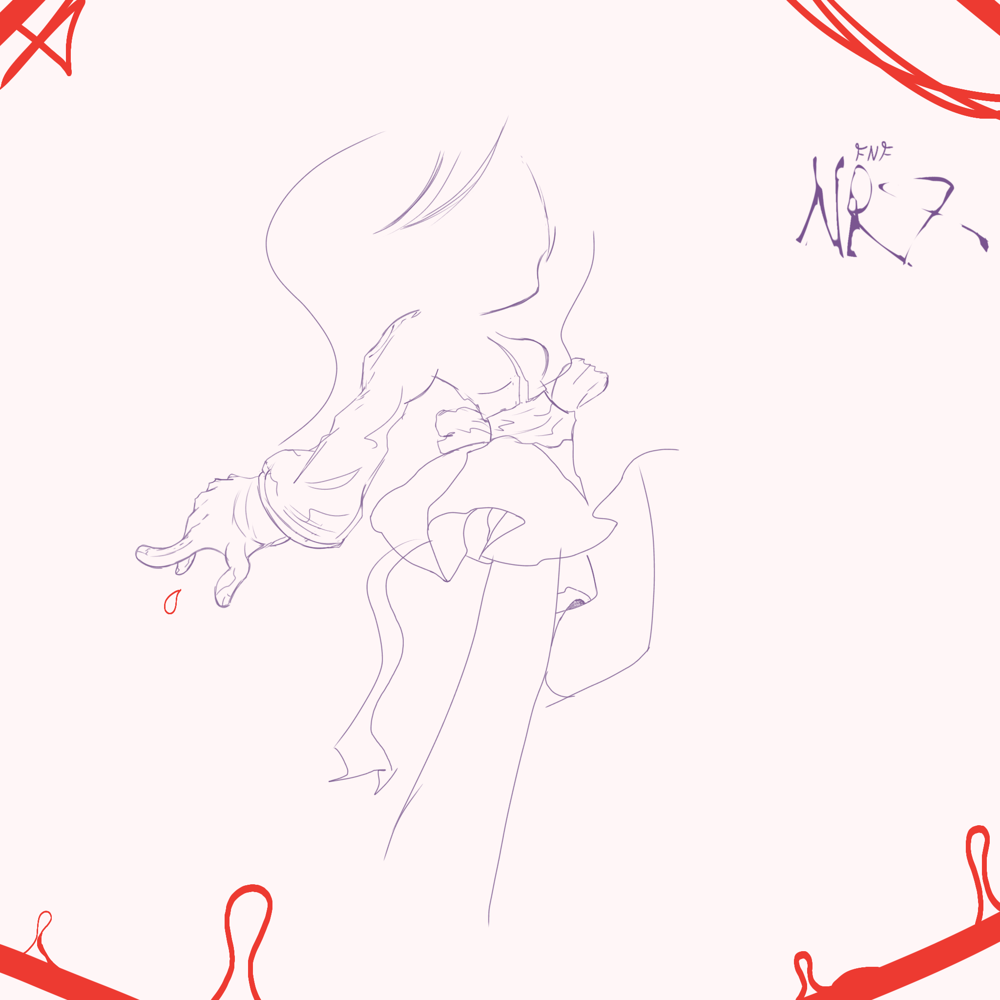

REGISTRO DEL ESTUDIO
Temporada 3
Este expediente muestra el material actual presentado por NRX para María y Estefanía.
†

FILTRACIÓN // POSE 3
Sprite leak de Estefanía
Vista filtrada de la pose 3 del sprite.
† Fading Fire
CONFIRMADA PARA LA DEMOFiltración de Fading Fire, confirmada para la Demo de NRX : Reality Break.
Ver la filtración / fuente en X† Archivo SCRAPPED
El contenido descartado de María y Estefanía permanece separado del material actual.
Abrir contenido descartado